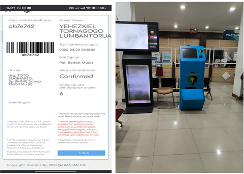

Dokumentasi wawancara dan observasi langsung di RS Bhayangkara Polri Kramat Jati yang mengungkap hambatan nyata dalam digitalisasi layanan kesehatan.

Setelah wawancara, pewawancara kembali menanyakan: "Mengapa walau sudah mendaftar online, saya harus tetap mengantri?" — Admin menjawab bahwa tetap harus mengantri di antrian umum untuk verifikasi sidik jari.
Pada RS Bhayangkara Polri Kramat Jati, meski sudah daftar online, pasien harus: (1) antri verifikasi sidik jari di antrian umum, (2) baru kemudian antri di poliklinik untuk konsultasi dokter. Ini berarti dua kali antrian untuk satu kunjungan.
Menurut analisis pewawancara, lebih ideal jika pasien yang sudah daftar online langsung antri di poliklinik saja. Poliklinik pun memiliki rata-rata 4–6 petugas yang kompeten untuk dialih-tugaskan menangani verifikasi, sehingga alur bisa lebih efisien.
Pasien yang mendaftar online tetap melewati proses 2 tahap antrian — padahal berpotensi diringkas menjadi 1 tahap.